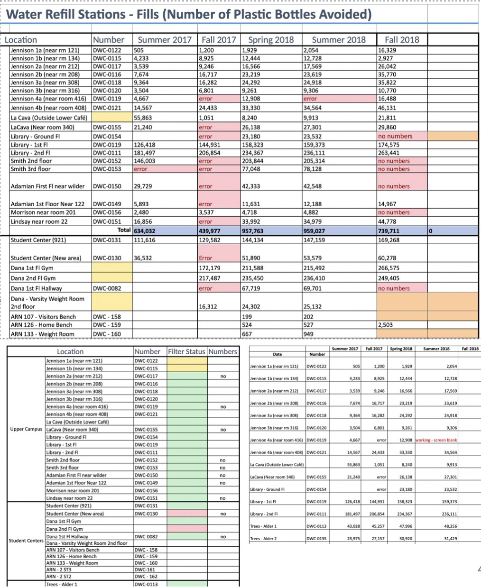
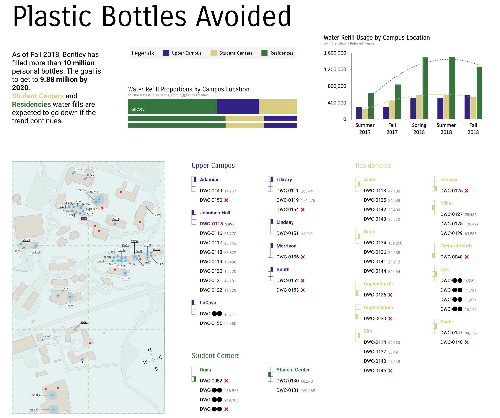
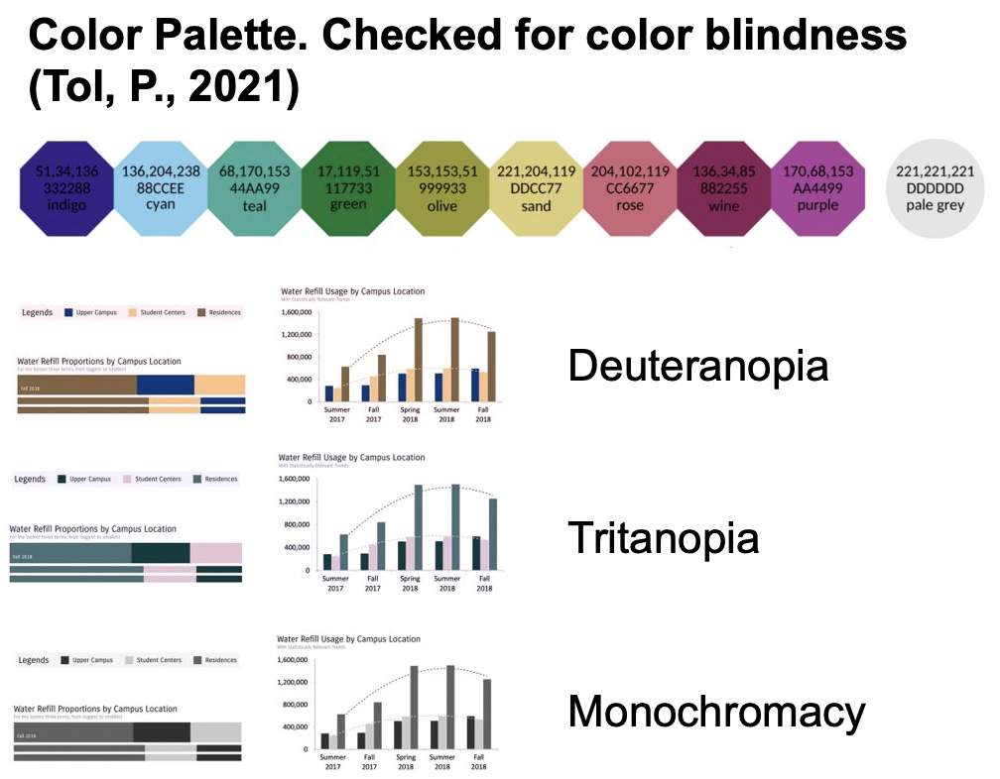
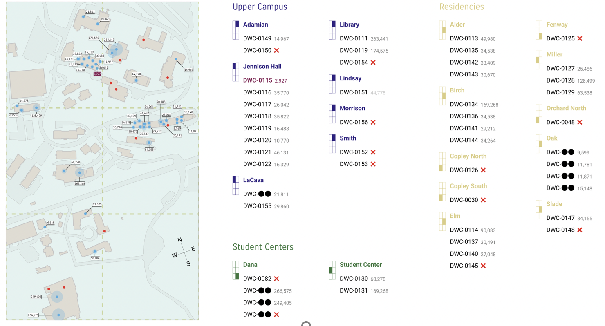
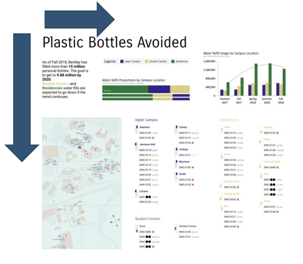

This project is an exercise on Data Visualization. During this exercise, I used DataVis theory to craft a visualization which would help the Bentley’s Office of Sustainability better analyze their Water usage thorough the years.
Original data source
At the start of the project, the Office provided me with a spreadsheet. However, said spreadsheet was not consistent nor it facilitated anything beyond surface-level data analysis and insights. Data was collected from every water filling station on campus, from summer 2017 to fall 2018. Each water station would output the number of bottles that were filled, but some had errors or could not display the number of fillings. Additionally, some stations had their identifier erased or damaged, which made it necessary to triangulate their position on the map based on the general area it was listed under.
Figure 1 Example of the spreadsheet where the original data was recorded, notice the inconsistency on formatting and high number of error readings in red
Alongside the data provided, they shared their yearly goals, which were used as a KPI in order to contextualize the information.
Analysis
Basically, I aimed to find a way to represent the data provided in the spreadsheet. Based on the information provided at the kickoff meeting with the Office of Sustainability, I put together a User persona, which helped me understand the stakeholder’s goals and constraints of the visualization.
End User Persona: Bentley Sustainability Staff
- Novice friendly, a part of the staff changes periodically
- Could be used to ‘wow’ stakeholders and provide an easy information digest snippet
- Accessible both in print and on a screen
- Identify and communicate water filling optimization opportunities
- Understand how different campus areas or buildings contribute to water usage and waste
- Align strategies to fulfill Bentley’s 2020 Sustainability goals and beyond
- Locate buildings where there are water filling stations
- Benchmark current water usage against Bentley’s Sustainability Goals
- Query how much water fillings were in a particular water station / building for the latest semester’s count
- Find damaged or bugged water stations
- Showcase historical water filling patterns and trends
Proposed Data Visualization
The following solution was based on different literature and books such as, how to effectively locate points in a map, showcase dataset errors visualization, display numbers effectively in maps and other basic principles of effective DataVis.
Figure 1, Visual representation of water usage at Bentley University on 2018
I designed this dashboard, with the title of ‘Plastic Bottles Avoided’, which I though to be a more action-oriented title rather than ‘Water Usage on Campus’ or other similar iterations, which goes on par with the Office’s goal of reducing the number of plastic bottles discarded.
Breakdown
First, a glaring concern of mine was to make sure to create an accesible visualization. For this I made use of a color palette which was designed specifically to be as accesible as possible. I used one of Paul Tol’s color palette, which I verified worked under different eye anomalies such as Deuteranopia (which affects 1/10 of males), Tritanopia, and even Monochromacy. This pallet was used consistently thorough the visualization, keeping both accessibility and consistency.
Figure 2. The visualization showcased under different color blindness simulations
For people with reading or cognitive impairments, I made sure to use accesible fonts, in this case Carrois Gothic and Roboto. Additionally, I made sure to give subtitles to every section in the dashboard, and provided a text breakdown of the most important KPI, which is located in the top left of the visualization.
Another consideration, particularly in the graphs shown, was based on Ware’s advice of keeping clear white background usage, taking advantage of length cognitive comparisons, and showcasing statistical trends only when they are statistically reliable (R2 > 0.9).
Figure 3. The map is divided in quadrants, which increases findability, as well as color coded and alphabetically sorted legends
The map was divided in quadrants, and those quadrants are presented on the left side of each campus area. The idea of this dashboard, is that the user would be able to click on a particular filling station and highlight it on the map. Additionally, errors are highlighted in both bottle stations IDs and in readings, using a censor character and a red cross respectively. The idea is that 1) the office of sustainability can see at a glance how prevalent are errors in their data, and to provide clear information to whoever reviews the dashboard, which in turn increases perceived reliability, even when showing errors.
Figure 4. The visualization discloses information detail as most westerners would, from left to right and from top to bottom
Rationale behind visualization
- Fill stations are arranged in a list trying to maximize visual search query reaction times, while also showcasing glaring attributes like name error, reading error and relative comparation with nearby fill stations in the map
- In the cases where there are errors in the dataset, they are never hidden from view and when possible they are contextualized as best as possible
- There are three ways to find how many fills a certain station has, search by id, item highlight in digital devices or using the grid area and fill number as query items in a visual search
Final steps
At the end of this exercise, this visualization was emailed back to Bentley’s Office of Sustainability, and hopefully it will help their team create better strategies to reach their KPIs.